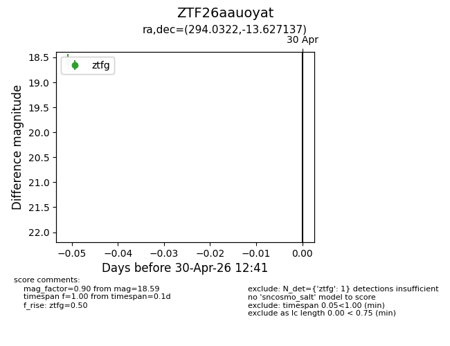
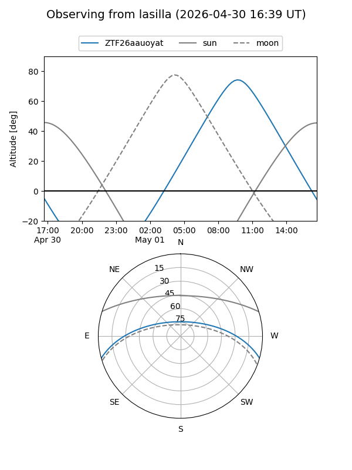
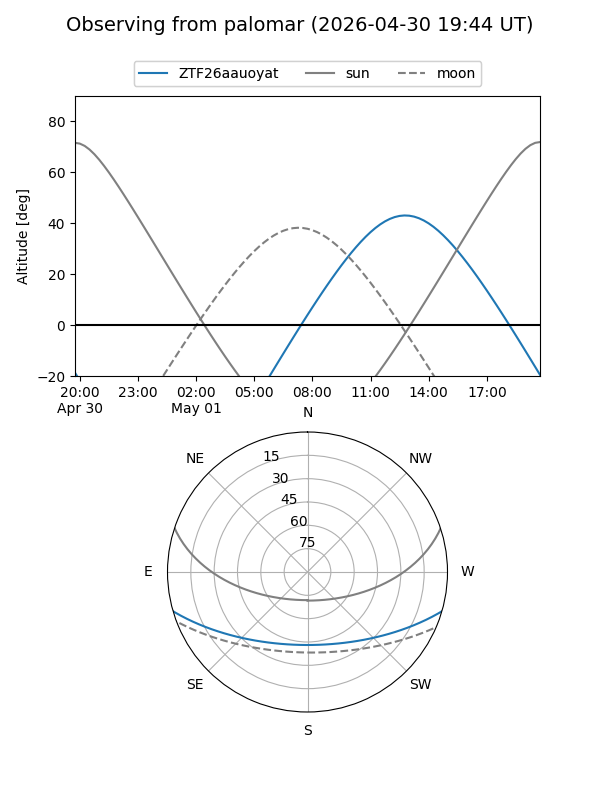
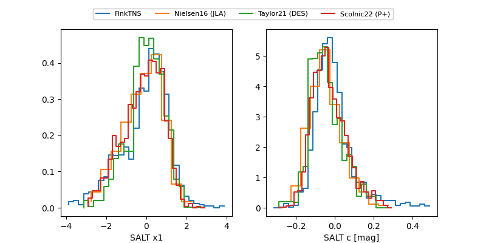

ZTF26aauoyat
Target ZTF26aauoyat at 2026-04-30 12:47
Aliases and brokers:
FINK: link
Lasair: link
ALeRCE: link
alt names
ZTF26aauoyat (ztf,fink_ztf)
Coordinates:
equatorial (ra, dec) = 294.0322,-13.62714
equatorial (HMS+DMS) = 19:36:07.72,-13:37:37.69
galactic (l, b) = (25.5327,-15.96358)
Flags:
Photometry:
last ztfg=18.59
1 ztfg detections
Lightcurve

Visibility


Additional plots
